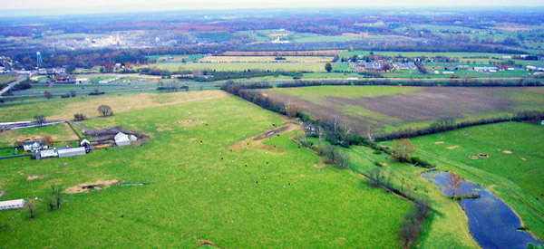
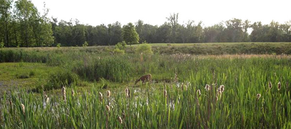

NEW COMMUNITIES

Aerial View of Waverly Farm
Waverly Farm is a 330 acre dairy farm just north of the town of Winchester. This beautiful property has gently rolling topography with pastoral views of surrounding farms and countryside. Waverly Farm is subdivided into 66 single family home sites ranging in size from 2 to 6 acres. 152 acres of this property is dedicated to rural preservation while the home sites are on the remaining 178 acres.

Winchester is located along Interstate Rt. 81 in Virginia’s Shenandoah Valley and is approximately 75 miles outside of Washington DC. While some residents do commute into work in the DC area, Winchester has a strong economy and job base of its own. The I-81 corridor is a major conduit for goods being transported along the East Coast. Truckers prefer I-81 instead of the congested I-95 corridor. Virginia’s Inland Port, just south of Winchester, moves goods via rail to and from Norfolk. Several large companies have distribution centers in the Winchester area, including Rite Aid, Kohl’s and Red Bull.
Several federal agencies, including the FBI and FEMA have operations located in Winchester as it offers a lower cost of living, easy access to a major highway and views of the nearby Blue Ridge Mountains. More importantly for government agencies, Winchester is considered to be a more secure location that Washington DC and its immediate suburbs. Both the FBI and FEMA facilities are within a few miles of Waverly Farm.
Engineering for the 66 home sites in Waverly Farm is complete. Drain field sites have been approved and bidding has begun for the land development. The models to be offered at Waverly Farm are the CARLTON, the EVONSHIRE, the TYLER and the MADISON. Home sizes would range up to 4,000 SF, have side load garages with prices anticipated to be in the $400 Thousands.
For more information, please call office administrator at 703-787-0426.